산업안전기사 (2020-08-22 기출문제)
1과목: 안전관리론
1. 레빈(Lewin)의 인간 행동 특성을 다음과 같이 표현하였다. 변수 'E'가 의미하는 것은?
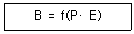
- 연령
- 성격
- 환경
- 지능
(정답률: 93%)

2. 다음 중 안전교육의 형태 중 OJT(On The Job of training) 교육에 대한 설명과 거리가 먼 것은?
- 다수의 근로자에게 조직적 훈련이 가능하다.
- 직장의 실정에 맞게 실제적인 훈련이 가능하다.
- 훈련에 필요한 업무의 지속성이 유지된다.
- 직장의 직속상사에 의한 교육이 가능하다.
(정답률: 87%)
3. 다음 중 안전교육의 기본 방향과 가장 거리가 먼 것은?
- 생산성 향상을 위한 교육
- 사고사례중심의 안전교육
- 안전작업을 위한 교육
- 안전의식 향상을 위한 교육
(정답률: 91%)
4. 다음 설명의 학습지도 형태는 어떤 토의법 유형인가?
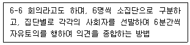
- 포럼(Forum)
- 버즈세션(Buzz session)
- 케이스 메소드(case method)
- 패널 디스커션(Panel Discussion)
(정답률: 88%)
5. 안전점검의 종류 중 태풍, 폭우 등에 의한 침수, 지진 등의 천재지변이 발생한 경우나 이상사태 발생시 관리자나 감독자가 기계, 기구, 설비 등의 기능상 이상 유무에 대하여 점검하는 것은?
- 일상점검
- 정기점검
- 특별점검
- 수시점검
(정답률: 94%)
6. 다음 중 산업재해의 원인으로 간접적 원인에 해당되지 않는 것은?
- 기술적 원인
- 물적 원인
- 관리적 원인
- 교육적 원인
(정답률: 83%)
7. 산업안전보건법령상 안전보건관리책임자 등에 대한 교육시간 기준으로 틀린 것은?
- 보건관리자, 보건관리전문기관의 종사자 보수교육 : 24시간 이상
- 안전관리자, 안전관리전문기관의 종사자 신규교육 : 34시간 이상
- 안전보건관리책임자 보수교육 : 6시간 이상
- 건설재해예방전문지도기관의 종사자 신규교육 : 24시간 이상
(정답률: 65%)
8. 매슬로우(Maslow)의 욕구단계 이론 중 제2단계 욕구에 해당하는 것은?
- 자아실현의 욕구
- 안전에 대한 욕구
- 사회적 욕구
- 생리적 욕구
(정답률: 90%)
9. 다음 중 재해예방의 4원칙과 관련이 가장 적은 것은?
- 모든 재해의 발생 원인은 우연적인 상황에서 발생한다.
- 재해손실은 사고가 발생할 때 사고 대상의 조건에 따라 달라진다.
- 재해예방을 위한 가능한 안전대책은 반드시 존재한다.
- 재해는 원칙적으로 원인만 제거되면 예방이 가능하다.
(정답률: 55%)
10. 파블로프(Pavlov)의 조건반사설에 의한 학습이론의 원리가 아닌 것은?
- 일관성의 원리
- 계속성의 원리
- 준비성의 원리
- 강도의 원리
(정답률: 50%)
11. 인간의 동작특성 중 판단과정의 착오요인이 아닌 것은?
- 합리화
- 정서불안정
- 작업조건불량
- 정보부족
(정답률: 44%)
12. 산업안전보건법령상 안전/보건표지의 색채와 사용사례의 연결로 틀린 것은?
- 노란색 – 정지신호, 소화설비 및 그 장소, 유해행위의 금지
- 파란색 – 특정 행위의 지시 및 사실의 고지
- 빨간색 – 화학물질 취급장소에서의 유해/위험 경고
- 녹색 – 비상구 및 피난소, 사람 또는 차량의 통행표지
(정답률: 84%)
13. 산업안전보건법령상 안전/보건표지의 종류 중 다음 표지의 명칭은? (단, 마름모 테두리는 빨간색이며, 안의 내용은 검은색이다.)
- 폭발성물질 경고
- 산화성물질 경고
- 부식성물질 경고
- 급성독성물질 경고
(정답률: 89%)
14. 하인리히의 재해발생 이론이 다음과 같이 표현될 때, α가 의미하는 것으로 옳은 것은?
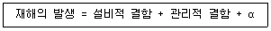
- 노출된 위험의 상태
- 재해의 직접적인 원인
- 물적 불안전 상태
- 잠재된 위험의 상태
(정답률: 80%)
15. 허즈버그(Herzberg)의 위생-동기 이론에서 동기요인에 해당하는 것은?
- 감독
- 안전
- 책임감
- 작업조건
(정답률: 78%)
16. 재해분석도구 중 재해발생의 유형을 어골상(魚骨像)으로 분류하여 분석하는 것은?
- 파레토도
- 특성요인도
- 관리도
- 클로즈분석
(정답률: 76%)
17. 다음 중 안전모의 성능시험에 있어서 AE, ABE종에만 한하여 실시하는 시험은?
- 내관통성시험, 충격흡수성시험
- 난연성시험, 내수성시험
- 난연성시험, 내전압성시험
- 내전압성시험, 내수성시험
(정답률: 69%)
18. 플리커 검사(flicker test)의 목적으로 가장 적절한 것은?
- 혈중 알코올농도 측정
- 체내 산소량 측정
- 작업강도 측정
- 피로의 정도 측정
(정답률: 78%)
19. 강도율에 관한 설명 중 틀린 것은?
- 사망 및 영구 전노동불능(신체장해등급 1~3급)의 근로손실일수는 7500일로 환산한다.
- 신체장해등급 중 제14급은 근로손실일수를 50일로 환산한다.
- 영구 일부 노동불능은 신체 장해등급에 따른 근로손실일수에 300/365를 곱하여 환산한다.
- 일시 전노동 불능은 휴업일수에 300/365를 곱하여 근로손실일수를 환산한다.
(정답률: 74%)
20. 다음 중 브레인 스토밍의 4원칙과 가장 거리가 먼 것은?
- 자유로운 비평
- 자유분방한 발언
- 대량적인 발언
- 타인 의견의 수정 발언
(정답률: 83%)
2과목: 인간공학 및 시스템안전공학
21. 화학설비의 안전성 평가에서 정량적 평가의 항목에 해당되지 않는 것은?
- 훈련
- 조작
- 취급물질
- 화학설비용량
(정답률: 65%)
22. 인간 에러(human error)에 관한 설명으로 틀린 것은?
- omission error : 필요한 작업 또는 절차를 수행하지 않는데 기인한 에러
- commission error : 필요한 작업 또는 절차의 수행지연으로 인한 에러
- extraneous error : 불필요한 작업 또는 절차를 수행함으로써 기인한 에러
- sequential error : 필요한 작업 또는 절차의 순서 착오로 인한 에러
(정답률: 76%)
23. 다음은 유해위험방지계획서의 제출에 관한 설명이다. ( )안의 들어갈 내용으로 옳은 것은?
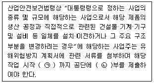
- ㉠ : 7일전, ㉡ : 2
- ㉠ : 7일전, ㉡ : 4
- ㉠ : 15일전, ㉡ : 2
- ㉠ : 15일전, ㉡ : 4
(정답률: 79%)
24. 그림과 같이 FTA로 분석된 시스템에서 현재 모든 기본사상에 대한 부품이 고장난 상태이다. 부품 X1부터 부품 X5 까지 순서대로 복구한다면 어느 부품을 수리 완료하는 시점에서 시스템이 정상가동 되는가?
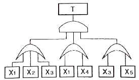
- 부품 X2
- 부품 X3
- 부품 X4
- 부품 X5
(정답률: 83%)
25. 눈과 물체의 거리가 23cm, 시선과 직각으로 측정한 물체의 크기가 0.03cm일 때 시각(분)은 얼마인가? (단, 시각은 600이하이며, radian단위를 분으로 환산하기 위한 상수값은 57.3과 60을 모두 적용하여 계산하도록 한다.)
- 0.001
- 0.007
- 4.48
- 24.55
(정답률: 48%)
26. Sanders와 McCormick의 의자 설계의 일반적인 원칙으로 옳지 않은 것은?
- 요부 후반을 유지한다.
- 조정이 용이해야 한다.
- 등근육의 정적부하를 줄인다.
- 디스크가 받는 압력을 줄인다.
(정답률: 85%)
27. 후각적 표시장치(olfactory display)와 관련된 내용으로 옳지 않은 것은?
- 냄새의 확산을 제어할 수 없다.
- 시각적 표시장치에 비해 널리 사용되지 않는다.
- 냄새에 대한 민감도의 개별적 차이가 존재한다.
- 경보 장치로서 실용성이 없기 때문에 사용되지 않는다.
(정답률: 80%)
28. 그림과 같은 FT도에서 F1 = 0.015, F2 = 0.02, F3 = 0.⑤이면, 정상사상 T가 발생할 확률은 약 얼마인가?(오류 신고가 접수된 문제입니다. 반드시 정답과 해설을 확인하시기 바랍니다.)
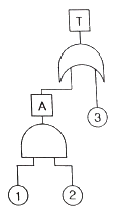
- 0.0002
- 0.0283
- 0.⑤03
- 0.9500
(정답률: 64%)
29. NOISH lifting guideline에서 권장무게한계(RWL) 산출에 사용되는 계수가 아닌 것은?
- 휴식 계수
- 수평 계수
- 수직 계수
- 비대칭 계수
(정답률: 68%)
30. 인간공학을 기업에 적용할 때의 기대효과로 볼 수 없는 것은?
- 노사 간의 신뢰 저하
- 작업손실시간의 감소
- 제품과 작업의 질 향상
- 작업자의 건강 및 안전 향상
(정답률: 88%)
31. THERP(Technique for Human Error Rate Prediction)의 특징에 대한 설명으로 옳은 것을 모두 고른 것은?
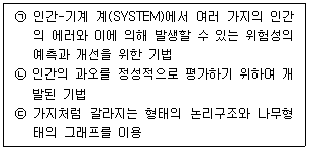
- ㉠, ㉡
- ㉠, ㉢
- ㉡, ㉢
- ㉠, ㉡, ㉢
(정답률: 53%)
32. 차폐효과에 대한 설명으로 옳지 않은 것은?
- 차폐음과 배음의 주파수가 가까울 때 차폐효과가 크다.
- 헤어드라이어 소음 때문에 전화 음을 듣지 못한 것과 관련이 있다.
- 유의적 신호와 배경 소음의 차이를 신호/소음(S/N) 비로 나타낸다.
- 차폐효과는 어느 한 음 때문에 다른 음에 대한 감도가 증가되는 현상이다.
(정답률: 76%)
33. 산업안전보건기준에 관한 규칙상 '강렬한 소음 작업'에 해당하는 기준은?
- 85데시벨 이상의 소음이 1일 4시간 이상 발생하는 작업
- 85데시벨 이상의 소음이 1일 8시간 이상 발생하는 작업
- 90데시벨 이상의 소음이 1일 4시간 이상 발생하는 작업
- 90데시벨 이상의 소음이 1일 8시간 이상 발생하는 작업
(정답률: 74%)
34. HAZOP 기법에서 사용하는 가이드 워드와 의미가 잘못 연결된 것은?
- No/Not – 설계 의도의 완전한 부정
- More/Less – 정량적인 증가 또는 감소
- Part of – 성질상의 감소
- Other than – 기타 환경적인 요인
(정답률: 76%)
35. 그림과 같이 신뢰도가 95%인 펌프 A가 각각 신뢰도 90%인 밸브 B와 밸브 C의 병렬밸브계와 직렬계를 이룬 시스템의 실패확률은 약 얼마인가?
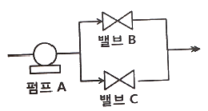
- 0.0091
- 0.⑤95
- 0.94⑤
- 0.9811
(정답률: 50%)
36. 인간이 기계보다 우수한 기능으로 옳지 않은 것은? (단, 인공지능은 제외한다.)
- 암호화된 정보를 신속하게 대량으로 보관할 수 있다.
- 관찰을 통해서 일반화하여 귀납적으로 추리한다.
- 항공사진의 피사체나 말소리처럼 상황에 따라 변화하는 복잡한 자극의 형태를 식별할 수 있다.
- 수신 상태가 나쁜 음극선관에 나타나는 영상과 같이 배경 잡음이 심한 경우에도 신호를 인지할 수 있다.
(정답률: 76%)
37. FTA에서 사용되는 최소 컷셋에 대한 설명으로 옳지 않은 것은?
- 일반적으로 Fussell Algorithm을 이용한다.
- 정상사상(Top event)을 일으키는 최소한의 집합이다.
- 반복되는 사건이 많은 경우 Limnios와 Ziani Algorithm을 이용하는 것이 유리하다.
- 시스템에 고장이 발생하지 않도록 하는 모든 사상의 집합이다.
(정답률: 67%)
38. 직무에 대하여 청각적 자극 제시에 대한 음성 응답을 하도록 할 때 가장 관련 있는 양립성은?
- 공간적 양립성
- 양식 양립성
- 운동 양립성
- 개념적 양립성
(정답률: 50%)
39. 컴퓨터 스크린 상에 있는 버튼을 선택하기 위해 커서를 이동시키는데 걸리는 시간을 예측하는 가장 적합한 법칙은?
- Fitts의 법칙
- Lewin의 법칙
- Hick의 법칙
- Weber의 법칙
(정답률: 62%)
40. 설비의 고장과 같이 발생확률이 낮은 사건의 특정시간 또는 구간에서의 발생횟수를 측정하는 데 가장 적합한 확률분포는?
- 이항분포(Binomial distribution)
- 푸아송분포(Poisson distribution)
- 와이블분포(Weibulll distribution)
- 지수분포(Exponential distribution)
(정답률: 58%)
3과목: 기계위험방지기술
41. 산업안전보건법령상 양중기를 사용하여 작업하는 운전자 또는 작업자가 보기 쉬운 곳에 해당 양중기에 대해 표시하여야할 내용으로 가장 거리가 먼 것은? (단, 승강기는 제외한다.)
- 정격 하중
- 운전 속도
- 경고 표시
- 최대 인양 높이
(정답률: 59%)
42. 롤러기의 급정지장치에 관한 설명으로 가장 적절하지 않은 것은?
- 복부 조작식은 조작부 중심점을 기준으로 밑면으로부터 1.2 ~ 1.4m 이내의 높이로 설치한다.
- 손 조작식은 조작부 중심점을 기준으로 밑면으로부터 1.8m이내의 높이로 설치한다.
- 급정지장치의 조작부에 사용하는 줄은 사용중에 늘어져서는 안된다.
- 급정지장치의 조작부에 사용하는 줄은 충분한 인장강도를 가져야 한다.
(정답률: 72%)
43. 연삭기의 안전작업수칙에 대한 설명 중 가장 거리가 먼 것은?
- 숫돌의 정면에 서서 숫돌 원주면을 사용한다.
- 숫돌 교체시 3분 이상 시운전을 한다.
- 숫돌의 회전은 최고 사용 원주속도를 초과하여 사용하지 않는다.
- 연삭숫돌에 충격을 가하지 않는다.
(정답률: 79%)
44. 롤러기의 가드와 위험점검간의 거리가 100mm일 경우 ILO 규정에 의한 가드 개구부의 안전간격은?
- 11mm
- 21mm
- 26mm
- 31mm
(정답률: 55%)
45. 지게차의 포크에 적재된 화물이 마스트 후방으로 낙하함으로서 근로자에게 미치는 위험을 방지하기 위하여 설치하는 것은?
- 헤드가드
- 백레스트
- 낙하방지장치
- 과부하방지장치
(정답률: 72%)
46. 산업안전보건법령상 프레스 및 전단기에서 안전 블록을 사용해야 하는 작업으로 가장 거리가 먼 것은?
- 금형 가공작업
- 금형 해체작업
- 금형 부착작업
- 금형 조정작업
(정답률: 70%)
47. 다음 중 기계 설비의 안전조건에서 안전화의 종류로 가장 거리가 먼 것은?
- 재질의 안전화
- 작업의 안전화
- 기능의 안전화
- 외형의 안전화
(정답률: 52%)
48. 다음 중 비파괴검사법으로 틀린 것은?
- 인장검사
- 자기탐상검사
- 초음파탐상검사
- 침투탐상검사
(정답률: 86%)
49. 산업안전보건법령상 아세틸렌 용접장치를 사용하여 금속의 용접·용단 또는 가열작업을 하는 경우 게이지 압력은 얼마를 초과하는 압력의 아세틸렌을 발생시켜 사용하면 안되는가?
- 98 kPa
- 127 kPa
- 147 kPa
- 196 kPa
(정답률: 84%)
50. 산업안전보건볍령상 산업용 로봇으로 인하여 근로자에게 발생할 수 있는 부상 등의 위험이 있는 경우 위험을 방지하기 위하여 울타리를 설치할 때 높이는 최소 몇 m이상으로 해야하는가? (단, 산업표준화법 및 국제적으로 통용되는 안전기준은 제외한다.)
- 1.8
- 2.1
- 2.4
- 1.2
(정답률: 84%)
51. 크레인의 사용 중 하중이 정격을 초과하였을 때 자동적으로 상승이 정지되는 장치는?
- 해지장치
- 이탈방지장치
- 아우트리거
- 과부하방지장치
(정답률: 82%)
52. 인간이 기계 등의 취급을 잘못해도 그것이 바로 사고나 재해와 연결되는 일이 없는 기능을 의미하는 것은?
- fail safe
- fail active
- fail operational
- fool proof
(정답률: 74%)
53. 산압안전보건법령상 컨베이어를 사용하여 작업을 할 때 작업시작 전 점검사항으로 가장 거리가 먼 것은?
- 원동기 및 풀리(pulley) 기능의 이상 유무
- 이탈 등의 방지장치 기능의 이상 유무
- 유압장치의 기능의 이상 유무
- 비상정지장치 기능의 이상 유무
(정답률: 75%)
54. 다음 중 기계설비에서 반대로 회전하는 두 개의 회전체가 맞닿는 사이에 발생하는 위험점으로 가장 적절한 것은?
- 물림점
- 협착점
- 끼임점
- 절단점
(정답률: 74%)
55. 선반 작업 시 안전수칙으로 가장 적절하지 않은 것은?
- 기계에 주유 및 청소 시 반드시 기계를 정지시키고 한다.
- 칩 제거시 브러시를 사용한다.
- 바이트에는 칩 브레이커를 설치한다.
- 선반의 바이트는 끝을 길게 장치한다.
(정답률: 84%)
56. 산업안전보건법령상 산업용 로봇의 작업 시작 전 점검 사항으로 가장 거리가 먼 것은?
- 외부 전선의 피복 또는 외장의 손상 유무
- 압력방출장치의 이상 유무
- 매니퓰레이터 작동 이상 유무
- 제동장치 및 비상정지 장치의 기능
(정답률: 79%)
57. 산업안전보건법령상 보일러의 과열을 방지하기 위하여 최고사용압력과 상용압력 사이에서 보일러의 버너 연소를 차단하여 정상 압력으로 유도하는 방호장치로 가장 적절한 것은?
- 압력방출장치
- 고저수위조절장치
- 언로우드밸브
- 압력제한스위치
(정답률: 72%)
58. 프레스 작동 후 슬라이드가 하사점에 도달할 때까지의 소요시간이 0.5s일 때 양수기동식 방호장치의 안전거리는 최소 얼마인가?
- 200mm
- 400mm
- 600mm
- 800mm
(정답률: 45%)
59. 둥근톱기계의 방호장치 중 반발예방장치의 종류로 틀린 것은?
- 분할날
- 반발방지 기구(finger)
- 보조 안내판
- 안전덮개
(정답률: 34%)
60. 산업안전보건법령상 형삭기(slotter, shaper)의 주요 구조부로 가장 거리가 먼 것은? (단, 수치제어식은 제외)
- 공구대
- 공작물 테이블
- 램
- 아버
(정답률: 52%)
4과목: 전기위험방지기술
61. 피뢰기가 구비하여야할 조건으로 틀린 것은?
- 제한전압이 낮아야 한다.
- 상용 주파 방전 개시 전압이 높아야 한다.
- 충격방전 개시전압이 높아야 한다.
- 속류 차단 능력이 충분하여야 한다.
(정답률: 53%)
62. 다음 중 정전기의 발생 현상에 포함되지 않는 것은?
- 파괴에 의한 발생
- 분출에 의한 발생
- 전도 대전
- 유동에 의한 대전
(정답률: 47%)
63. 방폭기기에 별도의 주위 온도 표시가 없을 때 방폭기기의 주위 온도 범위는? (단, 기호 “X"의 표시가 없는 기기이다.)
- 20℃ ~ 40℃
- -20℃ ~ 40℃
- 10℃ ~ 50℃
- -10℃ ~ 50℃
(정답률: 70%)
64. 정전기로 인한 화재 및 폭발을 방지하기 위하여 조치가 필요한 설비가 아닌 것은?
- 드라이클리닝 설비
- 위험물 건조설비
- 화약류 제조설비
- 위험기구의 제전설비
(정답률: 52%)
65. 300A의 전류가 흐르는 저압 가공전선로의 1선에서 허용 가능한 누설전류(mA)는?
- 600
- 450
- 300
- 150
(정답률: 63%)
66. 산업안전보건기준에 관한 규칙 제319조에 따라 감전될 우려가 있는 장소에서 작업을 하기 위해서는 전로를 차단하여야 한다. 전로 차단을 위한 시행 절차 중 틀린 것은?
- 전기기기 등에 공급되는 모든 전원을 관련 도면, 배선도 등으로 확인
- 각 단로기를 개방한 후 전원 차단
- 단로기 개방 후 차단장치나 단로기 등에 잠금장치 및 꼬리표를 부착
- 잔류전하 방전 후 검전기를 이용하여 작업 대상기기가 충전되어 있는 지 확인
(정답률: 67%)
67. 유자격자가 아닌 근로자가 방호되지 않은 충전전로 인근의 높은 곳에서 작업할 때에 근로자의 몸은 충전전로에서 몇 cm 이내로 접근할 수 없도록 하여야 하는가? (단, 대지전압이 50kV이다.)
- 50
- 100
- 200
- 300
(정답률: 41%)
68. 다음 중 정전기의 재해방지 대책으로 틀린 것은?
- 설비의 도체 부분을 접지
- 작업자는 정전화를 착용
- 작업장의 습도를 30% 이하로 유지
- 배관 내 액체의 유속제한
(정답률: 75%)
69. 가스(발화온도 120℃)가 존재하는 지역에 방폭기기를 설치하고자 한다. 설치가 가능한 기기의 온도 등급은?
- T2
- T3
- T4
- T5
(정답률: 30%)
70. 변압기의 중성점을 제2종 접지한 수전전압 22.9kV, 사용전압 220V인 공장에서 외함을 제3종 접지공사를 한 전동기가 운전 중에 누전되었을 경우에 작업자가 접촉될 수 있는 최소전압은 약 몇 V인가? (단, 1선 지락전류 10A, 제3종 접지저항 30Ω, 인체저항 : 10000Ω이다.)(관련 규정 개정전 문제로 여기서는 기존 정답인 3번을 누르면 정답 처리됩니다. 자세한 내용은 해설을 참고하세요.)
- 116.7
- 127.5
- 146.7
- 165.6
(정답률: 65%)
71. 제전기의 종류가 아닌 것은?
- 전압인가식 제전기
- 정전식 제전기
- 방사선식 제전기
- 자기방전식 제전기
(정답률: 40%)
72. 정전기 방전현상에 해당되지 않는 것은?
- 연면방전
- 코로나 방전
- 낙뢰방전
- 스팀방전
(정답률: 65%)
73. 전로에 지락이 생겼을 때에 자동적으로 전로를 차단하는 장치를 시설해야하는 전기기계의 사용전압 기준은? (단, 금속제 외함을 가지는 저압의 기계 기구로서 사람이 쉽게 접촉할 우려가 있는 곳에 시설되어 있다.)
- 30V 초과
- 50V 초과
- 90V 초과
- 150V 초과
(정답률: 33%)
74. 정전용량 C=20μF, 방전 시 전압 V=2kV일 때 정전에너지(J)는 얼마인가?
- 40
- 80
- 400
- 800
(정답률: 66%)
75. 전로에 시설하는 기계기구의 금속제 외함에 접지공사를 하지 않아도 되는 경우로 틀린 것은?
- 저압용의 기계기구를 건조한 목재의 마루 위에서 취급하도록 시설한 경우
- 외함 주위에 적당한 절연대를 설치한 경우
- 교류 대지 전압이 300V 이하인 기계기구를 건조한 곳에 시설한 경우
- 전기용품 및 생활용품 안전관리법의 적용을 받는 2중 절연구조로 되어 있는 기계기구를 시설하는 경우
(정답률: 68%)
76. Dalziel에 의하여 동물 실험을 통해 얻어진 전류값을 인체에 적용했을 때 심실세동을 일으키는 전기에너지(J)는 약 얼마인가? (단, 인체 전기저항은 500Ω으로 보며, 흐르는 전류
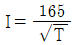
mA로 한다.)- 9.8
- 13.6
- 19.6
- 27
(정답률: 83%)
77. 전기설비의 방폭구조의 종류가 아닌 것은?
- 근본 방폭구조
- 압력 방폭구조
- 안전증 방폭구조
- 본질안전 방폭구조
(정답률: 74%)
78. 작업자가 교류전압 7000V 이하의 전로에 활선 근접작업시 감전사고 방지를 위한 절연용 보호구는?
- 고무절연관
- 절연시트
- 절연커버
- 절연안전모
(정답률: 68%)
79. 방폭전기기기에 “Ex ia ⅡC T4 Ga”라고 표시되어 있다. 해당 기기에 대한 설명으로 틀린 것은?
- 정상 작동, 예상된 오작동에 또는 드문 오작동 중에 점화원이 될 수 없는 “매우 높은” 보호등급의 기기이다.
- 온도 등급이 T4이므로 최고표면온도가 150℃를 초과해서는 안된다.
- 본질안전 방폭구조로 0종 장소에서 사용이 가능하다.
- 수소 및 아세틸렌 등의 가스가 존재하는 곳에 사용이 가능하다.
(정답률: 54%)
80. 전기기계·기구의 기능 설명으로 옳은 것은?
- CB는 부하전류를 개폐시킬 수 있다.
- ACB는 진공 중에서 차단동작을 한다.
- DS는 회로의 개폐 및 대용량부하를 개폐시킨다.
- 피뢰침은 뇌나 계통의 개폐에 의해 발생하는 이상 전압을 대지로 방전시킨다.
(정답률: 47%)
5과목: 화학설비위험방지기술
81. 다음 중 압축기 운전시 토출압력이 갑자기 증가하는 이유로 가장 적절한 것은?
- 윤활유의 과다
- 피스톤 링의 가스 누설
- 토출관 내에 저항 발생
- 저장조 내 가스압의 감소
(정답률: 76%)
82. 진한 질산이 공기 중에서 햇빛에 의해 분해되었을 때 발생하는 갈색증기는?
- N2
- NO2
- NH3
- NH2
(정답률: 61%)
83. 고온에서 완전 열분해하였을 대 산소를 발생하는 물질은?
- 황화수소
- 과염소산칼륨
- 메틸리튬
- 적린
(정답률: 69%)
84. 다음 중 분진 폭발에 관한 설명으로 틀린 것은?
- 폭발한계 내에서 분진의 휘발성분이 많으면 폭발 위험성이 높다.
- 분진이 발화 폭발하기 위한 조건은 가연성, 미분상태, 공기 중에서의 교반과 유동 및 점화원의 존재이다.
- 가스폭발과 비교하여 연소의 속도나 폭발의 압력이 크고, 연소시간이 짧으며, 발생에너지가 작다.
- 폭발한계는 입자의 크기, 입도분포, 산소농도, 함유수분, 가연성가스의 혼입 등에 의해 같은 물질의 분진에서도 달라진다.
(정답률: 82%)
85. 다음 중 유류화재의 화재급수에 해당하는 것은?
- A급
- B급
- C급
- D급
(정답률: 80%)
86. 증기 배관 내에 생성하는 응축수를 제거할 때 증기가 배출되지 않도록 하면서 응축수를 자동적으로 배출하기 위한 장치를 무엇이라 하는가?
- Vent stack
- Steam trap
- Blow down
- Relief valve
(정답률: 70%)
87. 다음 중 수분(H2O)과 반응하여 유독성 가스인 포스핀이 발생되는 물질은?
- 금속나트륨
- 알루미늄 분발
- 인화칼슘
- 수소화리튬
(정답률: 60%)
88. 대기압에서 사용하나 증발에 의한 액체의 손실을 방지함과 동시에 액면 위의 공간에 폭발성 위험가스를 형성할 위험이 적은 구조의 저장탱크는?
- 유동형 지붕 탱크
- 원추형 지붕 탱크
- 원통형 저장 탱크
- 구형 저장탱크
(정답률: 53%)
89. 자동화재탐지설비의 감지기 종류 중 열감지기가 아닌 것은?
- 차동식
- 정온식
- 보상식
- 광전식
(정답률: 71%)
90. 산업안전보건법령에서 규정하고 있는 위험물질의 종류 중 부식성 염기류로 분류되기 위하여 농도가 40%이상이어야 하는 물질은?
- 염산
- 아세트산
- 불산
- 수산화칼륨
(정답률: 53%)
91. 인화점이 각 온도 범위에 포함되지 않는 물질은?
- -30℃미만 : 디에틸에테르
- -30℃ 이상 0℃ 미만 : 아세톤
- 0℃ 이상 30℃미만 : 벤젠
- 30℃ 이상 65℃ 이하 : 아세트산
(정답률: 45%)
92. 다음 중 아세틸렌을 용해가스로 만들 때 사용되는 용제로 가장 적합한 것은?
- 아세톤
- 메탄
- 부탄
- 프로판
(정답률: 80%)
93. 다음 중 산업안전보건법령상 화학설비의 부속설비로만 이루어진 것은?
- 사이클론, 백필터, 전기집진기 등 분진처리설비
- 응축기, 냉각기, 가열기, 증발기 등 열교환기류
- 고로 등 점화기를 직접 사용하는 열교환기류
- 혼합기, 발포기, 압출기 등 화학제품 가공설비
(정답률: 64%)
94. 다음 중 밀폐 공간 내 작업시의 조치사항으로 가장 거리가 먼 것은?
- 산소결핍이나 유해가스로 인한 질식의 우려가 있으면 진행 중인 작업에 방해되지 않도록 주의하면서 환기를 강화하여야 한다.
- 해당 작업장을 적정한 공기상태로 유지되도록 환기하여야 한다.
- 그 장소에 근로자를 입장시킬 때와 퇴장시킬 때마다 인원을 점검하여야 한다.
- 그 작업장과 외부의 감시인 간에 항상 연락을 취할 수 있는 설비를 설치하여야 한다.
(정답률: 77%)
95. 산업안전보건법령상 폭발성 물질을 취급하는 화학설비를 설치하는 경우에 단위공정설비로부터 다른 단위공정설비 사이의 안전거리는 설비 바깥 면으로부터 몇 m 이상이어야 하는가?
- 10
- 15
- 20
- 30
(정답률: 61%)
96. 탄화수소 증기의 연소하한값 추정식은 연료의 양론농도(Cst)의 0.55배이다. 프로판 1몰의 연소반응식이 다음과 같을 때 연소하한값은 약 몇 vol%인가?
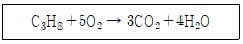
- 2.22
- 4.03
- 4.44
- 8.06
(정답률: 41%)
97. 에틸알콜(C2H5OH) 1몰이 완전연소할 때 생성되는 CO2의 몰수로 옳은 것은?
- 1
- 2
- 3
- 4
(정답률: 68%)
98. 프로판과 메탄의 폭발하한계가 각각 2.5, 5.0vol% 이라고 할 때 프로판과 메탄이 3:1의 체적비로 혼합되어 있다면 이 혼합가스의 폭발하한계는 약 몇 vol%인가? (단, 상온, 상압 상태이다.)
- 2.9
- 3.3
- 3.8
- 4.0
(정답률: 49%)
99. 다음 중 소화약제로 사용되는 이산화탄소에 관한 설명으로 틀린 것은?
- 사용 후에 오염의 영향이 거의 없다.
- 장시간 저장하여도 변화가 없다.
- 주된 소화효과는 억제소화이다.
- 자체 압력으로 방사가 가능하다.
(정답률: 67%)
100. 다음 중 물질의 자연발화를 촉진시키는 요인으로 가장 거리가 먼 것은?
- 표면적이 넓고, 발열량이 클 것
- 열전도율이 클 것
- 주위 온도가 높을 것
- 적당한 수분을 보유할 것
(정답률: 58%)
6과목: 건설안전기술
101. 콘크리트 타설을 위한 거푸집 동바리의 구조검토 시 가장 선행되어야 할 작업은?
- 각 부재에 생기는 응력에 대하여 안전한 단면을 산정한다.
- 가설물에 작용하는 하중 및 외력의 종류, 크기를 산정한다.
- 하중 및 외력에 의하여 각 부재에 생기는 응력을 구한다.
- 사용할 거푸집동바리의 설치간격을 결정한다.
(정답률: 66%)
102. 다음 중 해체작업용 기계 기구로 가장 거리가 먼 것은?
- 압쇄기
- 핸드 브레이커
- 철제 햄머
- 진동롤러
(정답률: 72%)
103. 거푸집동바리 등을 조립하는 경우에 준수하여야할 안전조치기준으로 옳지 않은 것은?
- 동바리로 사용하는 강관은 높이 2m 이내마다 수평연결재를 2개 방향으로 만들고 수평연결재의 변위를 방지할 것
- 동바리로 사용하는 파이프 서포트는 3개 이상이어서 사용하지 않도록 할 것
- 동바리로 사용하는 파이프 서포트를 이어서 사용하는 경우에는 3개 이상의 볼트 또는 전용철물을 사용하여 이을 것
- 동바리로 사용하는 강관틀과 강관틀 사이에는 교차가새를 설치할 것
(정답률: 72%)
104. 다음은 말비계를 조립하여 사용하는 경우에 관한 준수사항이다. ( )안에 들어갈 내용으로 옳은 것은?
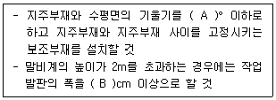
- A : 75, B : 30
- A : 75, B : 40
- A : 85, B : 30
- A : 85, B : 40
(정답률: 73%)
1⑤. 산업안전보건관리비계상기준에 따른 일반건설공사(갑), 대상액 「5억원 이상 ~ 50억원 미만」의 안전관리비 비율 및 기초액으로 옳은 것은?
- 비율 : 1.86%, 기초액 : 5,349,000원
- 비율 : 1.99%, 기초액 : 5,499,000원
- 비율 : 2.35%, 기초액 : 5,400,000원
- 비율 : 1.57%, 기초액 : 4,411,000원
(정답률: 70%)
106. 터널작업 시 자동경보장치에 대하여 당일의 작업시작 전 점검하여야 할 사항으로 옳지 않은 것은?
- 검지부의 이상 유무
- 조명시설의 이상 유무
- 경보장치의 작동 상태
- 계기의 이상 유무
(정답률: 70%)
107. 다음은 강관틀비계를 조립하여 사용하는 경우 준수해야할 기준이다. ( )안에 알맞은 숫자를 나열한 것은?
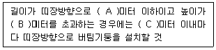
- A:4, B:10, C:5
- A:4, B:10, C:10
- A:5, B:10, C:5
- A:5, B:10, C:10
(정답률: 46%)
108. 지반의 종류가 다음과 같을 때 굴착면의 기울기 기준으로 옳은 것은?(2021년 11월19일 변경된 규정 적용됨)
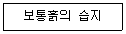
- 1 : 0.5 ~ 1 : 1
- 1 : 1 ~ 1 : 1.5
- 1 : 0.8
- 1 : 0.5
(정답률: 65%)
109. 동력을 사용하는 항타기 또는 항발기에 대하여 무너짐을 방지하기 위하여 준수하여야 할 기준으로 옳지 않은 것은?
- 연약한 지반에 설치하는 경우에는 각부(脚部)나 가대(架臺)의 침하를 방지하기 위하여 깔판·깔목 등을 사용할 것
- 각부나 가대가 미끄러질 우려가 있는 경우에는 말뚝 또는 쐐기 등을 사용하여 각부나 가대를 고정시킬 것
- 버팀대만으로 상단부분을 안정시키는 경우에는 버팀대는 3개 이상으로 하고 그 하단 부분은 견고한 버팀·말뚝 또는 철골 등으로 고정시킬 것
- 버팀줄만으로 상단 부분을 안정시키는 경우에는 버팀줄을 2개 이상으로 하고 같은 간격으로 배치할 것
(정답률: 58%)
110. 운반작업을 인력운반작업과 기계운반작업으로 분류할 때 기계운반작업으로 실시하기에 부적당한 대상은?
- 단순하고 반복적인 작업
- 표준화되어 있어 지속적이고 운반량이 많은 작업
- 취급물의 형상, 성질, 크기 등이 다양한 작업
- 취급물이 중량인 작업
(정답률: 78%)
111. 터널등의 건설작업을 하는 경우에 낙반 등에 의하여 근로자가 위험해질 우려가 있는 경우에 필요한 직접적인 조치사항과 거리가 먼 것은?
- 터널지보공 설치
- 부석의 제거
- 울 설치
- 록볼트 설치
(정답률: 49%)
112. 장비 자체보다 높은 장소의 땅을 굴착하는 데 적합한 장비는?
- 파워 쇼벨(Power Shovel)
- 불도저(Bulldozer)
- 드래그라인(Drag line)
- 클램쉘(Clam Shell)
(정답률: 74%)
113. 사다리식 통로의 길이가 10m 이상일 때 얼마 이내마다 계단참을 설치하여야 하는가?
- 3m 이내마다
- 4m 이내마다
- 5m 이내마다
- 6m 이내마다
(정답률: 69%)
114. 추락방지망 설치 시 그물코의 크기가 10cm인 매듭 있는 방망의 신품에 대한 인장강도 기준으로 옳은 것은?
- 100kgf 이상
- 200kgf 이상
- 300kgf 이상
- 400kgf 이상
(정답률: 73%)
115. 타워크레인을 자립고(自立高) 이상의 높이로 설치할 때 지지벽체가 없어 와이어로프로 지지하는 경우의 준수사항으로 옳지 않은 것은?
- 와이어로프를 고정하기 위한 전용 지지프레임을 사용할 것
- 와이어로프 설치각도는 수평면에서 60° 이내로 하되, 지지점은 4개소 이상으로 하고, 같은 각도로 설치할 것
- 와이어로프와 그 고정부위는 충분한 강도와 장력을 갖도록 설치하되, 와이어로프를 클립·샤클(shackle) 등의 기구를 사용하여 고정하지 않도록 유의할 것
- 와이어로프가 가공전선에 근접하지 않도록 할 것
(정답률: 72%)
116. 토질시험 중 연약한 점토 지반의 점착력을 판별하기 위하여 실시하는 현장시험은?
- 베인테스트(Vane Test)
- 표준관입시험(SPT)
- 하중재하시험
- 삼축압축시험
(정답률: 66%)
117. 비계의 부재 중 기둥과 기둥을 연결시키는 부재가 아닌 것은?
- 띠장
- 장선
- 가새
- 작업발판
(정답률: 73%)
118. 항만하역작업에서의 선박승강설비 설치기준으로 옳지 않은 것은?
- 200톤급 이상의 선박에서 하역작업을 하는 경우에 근로자들이 안전하게 오르내릴 수 있는 현문(舷門) 사다리를 설치하여야 하며, 이 사다리 밑에 안전망을 설치하여야 한다.
- 현문 사다리는 견고한 재료로 제작된 것으로 너비는 55cm 이상이어야 한다.
- 현문 사다리의 양측에는 82cm 이상의 높이로 울타리를 설치하여야 한다.
- 현문 사다리는 근로자의 통행에만 사용하여야 하며, 화물용 발판 또는 화물용 보판으로 사용하도록 해서는 아니 된다.
(정답률: 53%)
119. 다음 중 유해위험방지계획서 제출 대상 공사가 아닌 것은?
- 지상높이가 30m인 건축물 건설공사
- 최대지간길이가 50m인 교량건설공사
- 터널 건설공사
- 깊이가 11m인 굴착공사
(정답률: 75%)
120. 본 터널(main tunnel)을 시공하기 전에 터널에서 약간 떨어진 곳에 지질조사, 환기, 배수, 운반 등의 상태를 알아보기 위하여 설치하는 터널은?
- 프리패브(prefab) 터널
- 사이드(side) 터널
- 쉴드(shield) 터널
- 파일럿(pilot) 터널
(정답률: 67%)